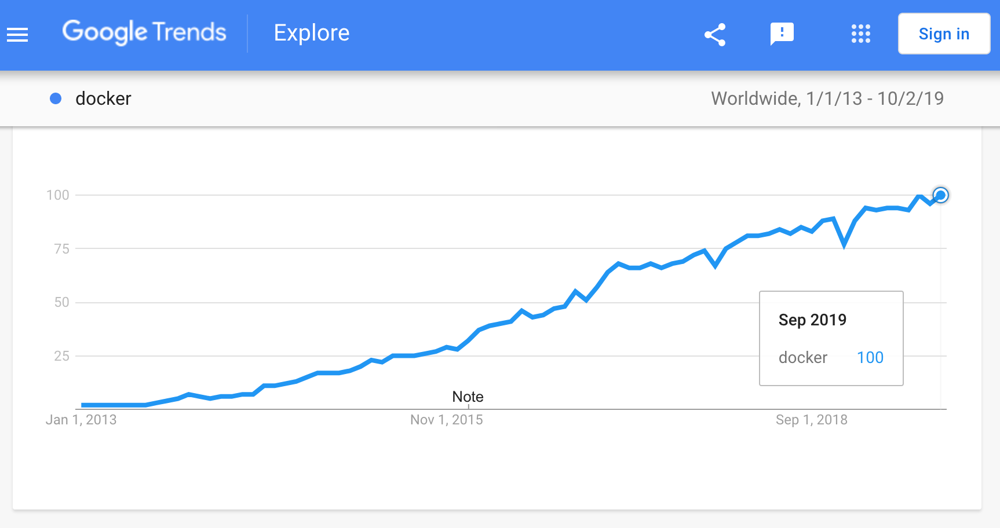
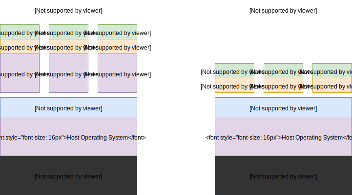

name: inverse layout: true class: center, middle, inverse --- name: impact layout: true class: center, middle, impact --- name: centered layout: true class: center, middle --- layout: false class: title name: title .content[ .align-center.v-align-bottom.no-bullets.small[ - presentation by: Tiago Carreira ] ] --- exclude: true # Thank to our Sponsors .left-column[ ## **Diamond** .pic[<img src="img/ubuntu.png" width="130">] ### Gold .pic[<img src="img/ubuntu_simple.png" width="30">] .pic[<img src="img/ubuntu_simple.png" width="30">] .pic[<img src="img/ubuntu_simple.png" width="30">] .pic[<img src="img/ubuntu_simple.png" width="30">] ] .right-column[ ## Platinum .pic[<img src="img/ANSOL.png" width="100">] .pic[<img src="img/mysql.png" width="100">] <br><br> ### Silver .pic[<img src="img/ubuntu_simple.png" width="30">] .pic[<img src="img/ubuntu_simple.png" width="30">] .pic[<img src="img/ubuntu_simple.png" width="30">] .pic[<img src="img/ubuntu_simple.png" width="30">] .pic[<img src="img/ubuntu_simple.png" width="30">] .pic[<img src="img/ubuntu_simple.png" width="30">] .pic[<img src="img/ubuntu_simple.png" width="30">] .pic[<img src="img/ubuntu_simple.png" width="30">] ] --- # About me .left-column[ .center[ ## Tiago Carreira ] Operations Engineer (DevOps) @ SAPO <br> .small[ - MSc in Electrical Engineering - working with Linux for 6y+ - favourite prog languages: bash, python, go - favourite text editor: vscode, vim - music, sports, therapeutic massages, bad jokes - .tiny[ **keywords:** DevOps, Automation, CI/CD, Docker, Beer] ] <br> <br> <br> ] .rigth-column[ .center.pic-circle[ ] .center.no-bullets.tiny[ - **mail:** tiago.g.carreira at gmail.com - **github:** https://<span comment="dont create a link">github.com/tcarreira - **twitter:** @tcarreira - **telegram:** @tcarreira ] ] --- layout: false template: impact name: agenda # Agenda (wip) .content.align-left[ .left-column[ - [What is Docker?](#what-is-docker) - [Docker Basics](#docker-basics) - [How to get started](#get-started) - [Multi-container applications](#multi-containers) - [Docker for development](#docker-for-dev) ] .right-column[ - [Dockerfile](#dockerfile) - [Volumes](#volumes) - [Layers](#layers) - [Networks](#networks) - [Docker-compose](#docker-compose) ] ] ??? - [What is Docker](#what-is-docker), [how it compares to VMs](#tech-comparison), [pros/cons](#pros-and-cons) - [Docker basics](#docker-basics): [containers](#containers), [images](#images), [dockerfiles](#dockerfile) - [How to get started](#get-started): [Install docker](#install-docker) + demos [1](#demo1)+[2](#demo2)+[3](#demo3)+[4](#demo4) - [Persistence](#persistence): [Volumes](#volumes) - [Multi-container applications](#multi-containers): [Docker-compose](#docker-compose) - [Docker for development](#docker-for-dev): [Debug](#debug) - [Table of Contents](#toc) --- template: inverse # Out of the scope<br><br> kubernetes (k8s)<br> docker swarm<br> rancher docker-machine<br> docker registry<br> cloud<br> elephants<br> ??? This related topics are out of the scope for today --- name: what-is-docker template: impact .content[ # What's All The Fuss About <!-- TODO: update this image--> .center[  ] ] ??? - Increasingly being used - Many open source projects are Docker ready<br> (very simple to setup as I'm going to show further) - eg: mysql/postgres, apache/nginx, memcached/redis, wordpress,... --- .left-column[ # What Docker IS - A <u>**tool**</u> for creating and manage containers and images - FLOSS (the community-edition) - Able to run on Linux, MacOS\* and Windows\* - Lightweight and fast - Great for microservices - Both for Devs and SysAdmins (fully DevOps) ] ??? - Easy tool that manages containers\*, images (containers templates) and everything around it (networking, storage, processes isolation) - FLOSS - Free/Libre Open Source Software (there are community and enterprise edition) - Easy images integration (either official and community images) - Able to run on Linux, MacOS and Windows - Linux: docker-ce - \*MacOS, \*Windows: Docker Desktop - Windows applications must run in Windows hosts - ? How much time for a new member from zero to fully ready dev environment ? - Devs may have a fully dev ready workstation in minutes, not hours (installing docker included) - It's a "documentation" for Devs and SysAdmins -- .right-column[ # What Docker is NOT - not Virtual Machine - not Intended to be used as a VM (but may be) - not Intended to be used as a regular server - not Magic that solves all your problems - not Tool for everything ] ??? ------- - the Container runs on the same kernel as the host. - Do not use it as a VM: - don't ssh into it - don't tweak a runnning container - Do not use it as a regular server - Don't install every application/software inside one container - Think about application isolation: one (micro)service per container - It's not magic. Although mostly easy, you need some effort for non-trivial stuff - It's a common "error" to try to fix everything with docker --- name: tech-comparison # Technology comparison ## Physical Server (old days) - One server → One application - Slow deployment times - Huge costs - Wasted resources - Difficult to scale - Difficult to migrate - Difficult to maintain ??? Just a quick review over the history: - Before, applications were deployed in bare metal - We had monolitic apps, slow development, huge costs in hw maintenance - Everything was difficult: scale, migrate, maintain --- # Technology comparison ## Hypervisor Virtualization (modern days) .left-column[ - Better resource pooling - Easier to scale - Cloud support - Elasticity - Pay as you go ] .right-column[ - Resources allocation - CPU - RAM - Storage - Operating System - More applications → More resources (~linear growth) ] ??? - VM are better - But still a problem with wasted resources - More applications => more resources --- # Technology comparison ## Containers (Future) - Better resource management - Faster - Lighter / Storage requirements - Faster to scale - Security ??? - It's not just future, it is already here. - No need to pre-alocate resources - No need to boot the OS - Take advantage of COW\* - Scale like VM, but faster - Security - no need for ssh, or other dependencies (\* later) --- # VM vs Container .center[  ] ??? - The lack of Guest OS enables - Faster boot up - Less resources: CPU/RAM/Storage - Better resource management --- name: pros-and-cons # Docker Pros & Cons .left-column[ ## Pros - Easy to get started - Great community & Widely used - Portable - Light and fast - Works on Linux + MacOS + Windows - Works as documentation - Easy to install dependencies - COW: Copy-On-Write ] ??? - really easy. If you don't know yet, you will know in the end - Docker has become a standard in the container insdustry and beyond - Lots of software support docker (as a quick start/installation)- just use git - Portable for devs and ops: - just share your dockerfile. No need to copy the whole VM (yeah, you can use vagrant. Try docker with vagrant if you may) - Portable: if I want to move to AWS, Azure, etc... it's easy(ier) - only the service running. No OS - bootup in seconds, no OS bootup - Need a mysql? There is an image for that. Postgres, Redis, Memcached, Mongo...... - COW: running 10 similar containers does not need 10x the storage. more on that later -- .right-column[ ## Cons - Not all applications benefit from containers - Not bare-metal performance - Persistent data storage - Graphical applications don't work well ] ??? - like production database - not useful for super-mainframe-single_unit-legacy-very_important-performance_sensitive service - persistence storage is achieved with volumes - But this Cons are usually irrelevant for most use cases --- name: docker-basics template: impact .content[ # The Basics ] ??? Let's check/review what are containers and images --- name: containers # Docker container "A container is a standard unit of software that packages up code and all its dependencies so the application runs quickly and reliably from one computing environment to another" ??? - citation from docker website - So what does this means? -- - Contains all software dependencies - Applicational isolation - Runs directly on the kernel - Instance of Docker Image ??? - no need to install any dependency on the host - A docker host may have multiple containers, unaware and isolated of each other - may be compared with the old 'portable software' vs 'regular installed software' --- name: images # Docker image "A Docker container image is a lightweight, standalone, executable package of software that includes everything needed to run an application: code, runtime, system tools, system libraries and settings." ??? - citation from docker website - So what does this means? -- - Template for running a container - Referenced list of layers - Layer: a list of changes to the filesystem - Immutable ??? - An image does not run, only a container does so - layers: more on that later - immutable: every change on a running container is not stored on the image --- name: dockerfile # Dockerfile .left-column[ - Blueprint of a Docker Image - Text file - List of ordered instructions (commands) - Documentation ] ??? one last Basic - It's the instructions for building an image - It's just a text file - with instructions - Also states as documentation - layer cache later -- .right-column[ ```dockerfile FROM ubuntu RUN apt-get update <red>!!!</red> RUN apt-get install cowsay <red>!!!</red> CMD ["cowsay", "Hello world"] ``` ] ??? - **DISCLAIMER**: For those who know docker already, I will fix this later - As you can see, it's just text file - Each command (FROM, RUN) creates a layer - First command is **FROM** (mandatory). It is the base template for our image - More commands later --- template: impact name: get-started .content[ # Let's get started ] --- name: install-docker # Install Docker - Do NOT install from apt-get: very outdated (almost useless) - Windows - Docker Desktop - https://docs.docker.com/docker-for-windows/install/ - Mac - Docker Desktop - https://docs.docker.com/docker-for-mac/install/ - Linux - Brain dead easy way: `wget -qO- https://get.docker.com | sh` - Other way: https://docs.docker.com/install/ Recommended for Linux: Manage Docker as a non-root user (https://docs.docker.com/install/linux/linux-postinstall/) ??? - Don't install from your regular app management. It's almost useless - Windows/Mac: Docker Desktop - Linux - just use the script or - do it manually by following the docs (still not hard) --- # Sanity check Docker ```no-highlight $ docker --version Docker version 18.09.1, build 4c52b90 ``` ```no-highlight $ docker run hello-world Hello from Docker! This message shows that your installation appears to be working correctly. ... ``` --- template: inverse # Demo Time ??? In order to get this easier, I will start demoing before talking about other COMMANDS and basics --- name: demo1 # Demo 1 .left-column[ ## Demo Project Goals - Fast test a container ].right-column[ ## Learning Goals - docker ] .no-column[ ## Learning commands ```no-highlight docker run -i -t <image_name> [<command>] # -i, --interactive # -t, --tty ``` ] ??? - docker run hello-world # and watch downloading - docker run -i -t ubuntu /bin/bash - x=0 - echo $x - echo $(( x+=1 )) - while true; do echo $(( x+=1 )); sleep 1; done --- name: demo2 # Demo 2 .left-column[ ## Demo Project Goals - Build an infinite counter - Bash counter ].right-column[ ## Learning Goals - Build Docker Images - Base images - New commands: FROM, ENTRYPOINT, CMD ] .no-column[ ## Learning commands ```no-highlight docker build -t <image_name> <context_path> docker run <image> ``` ] ??? - Create a file named `Dockerfile`: ```dockerfile FROM ubuntu CMD x=0; while true; do echo $(( x+=1 )); sleep 1; done ``` - `docker build -t my_demo2 .` - `docker run my_demo2` - (ctrl+c to stop the container) Note: entrypoint vs cmd ```dockerfile FROM ubuntu ENTRYPOINT ["echo", "Hello"] CMD ["World"] ``` - `docker build -f 2.0.Dockerfile -t mydemo2.0` - `docker run my_demo2.0` - `docker run my_demo2.0 People` --- # Demo 2.1 .left-column[ ## Demo Project Goals - Build an infinite counter - Bash counter ].right-column[ ## Learning Goals - New commands: COPY, RUN ] .no-column[ ## Learning commands ```no-highlight docker run <+>-d</+> <image> docker logs [-f] <container> docker ps docker stop ``` ] ??? - Create a `counter.sh`: ```bash #!/bin/bash x=0 while true; do echo $(( x+=1 )) sleep 1 done ``` ```dockerfile FROM ubuntu COPY counter.sh /counter.sh RUN chmod +x /counter.sh CMD /counter.sh ``` - docker build -t my_demo2.1 . - docker run **-d** my_demo2.1 - docker logs - docker ps - docker stop --- name: demo3 # Demo 3 .left-column[ ## Demo Project Goals - Http server - Static content ].right-column[ ## Learning Goals - Published ports - Bind volumes ] .no-column[ ## Learning commands ```no-highlight docker run --name <container_name> <image> docker run -p <host_port:container_port> <image> docker run -v <host_path:container_path> <image> ``` ] ??? - https://hub.docker.com/ - nginx image - How to use this image ```dockerfile FROM nginx COPY static-html /usr/share/nginx/html ``` - docker build -t my_demo3 . - docker run -d --name demo3 -p 9090:80 my_demo3 - docker ps + http://localhost:9090 - docker run -d --name demo3 -p 9090:80 -v "$(pwd)/static-html:/usr/share/nginx/html" my_demo3 - change index.html and refresh the page --- name: persistence template: impact .content[ # Persistence ] --- name: volumes # Volumes - Persisting data - Sharing data between containers - Types - Bind mounts (`docker run -v /path-on-host:/data`) - Named volume (`docker run -v vol_name:/data`) - Tmpfs (not persistent) - Other volumes - driver_opts (eg: NFS) ??? - Docker containers do not persist data once removed - The same volume may be used by multiple containers, allowing sharing files - Bind mount: specific path on the host is mounted to the container - Named volume: still mounted from host to container, but managed by docker - tmpfs: memory only - Other volumes: NFS --- name: multi-containers template: inverse # How about multi-container services? ??? So far so good, but most services need dependencies - http-proxy - cache - database - queue service - etc... --- name: docker-compose template: impact .content[ # docker-compose ] ??? enter docker-compose - Tool for managing multi-container apps --- # docker-compose.yml .left-column[ - services - image - ports - environment - ... - volumes - ... - networks - ... ] ??? - docker-compose.yml: yaml file describing the multi-container app - describe services (image, ports, etc...) - describe other configs for network and volumes (out of the scope) -- .right-column.small[ ```conf version: '3.3' services: db: image: 'mysql:5.7' <...> wordpress: image: wordpress:latest ports: - '8000:80' environment: WORDPRESS_DB_HOST: db:3306 WORDPRESS_DB_NAME: wordpress <...> volumes: db_data: ``` ] --- template: inverse name: demo4 # Demo Time --- # Demo 4 .left-column[ ## Demo Project Goals - Start a wordpress site ].right-column[ ## Learning Goals - Docker-compose - Environment variables - Named volumes ] .no-column[ ## Learning commands ```no-highlight docker-compose up -d docker-compose ps docker-compose logs <service> docker-compose [-f] stop docker volume (ls|rm) ``` ] ??? - A wordpress needs is dependent on a mysql db - https://docs.docker.com/compose/ > Get started with WordPress - Copy the example to a `docker-compose.yml` - `docker-compose up -d` - `docker-compose ps` - `docker-compose logs wordpress` - customize wordpress - `docker-compose stop` + `ps` + `down` + `ps` - test wordpress is up + `docker-compose down` - `docker volumes ls` + `docker volumes rm` --- name: debug template: inverse # How about debug with Docker? --- # Debug with Docker - Just like remote debug - Aware of the things under the hood - Expose debugging port - Configure debugger port ??? - It's less simple than straight forward development - It's just like remote debugging - You need to know how it works - You need to know ports - **Example Demo?** --- class: title name: tips .content[ .center.pic-600[  ] # Tips and Best Practices<br><br> ] ??? Some very useful tips for advance usage --- template: inverse END